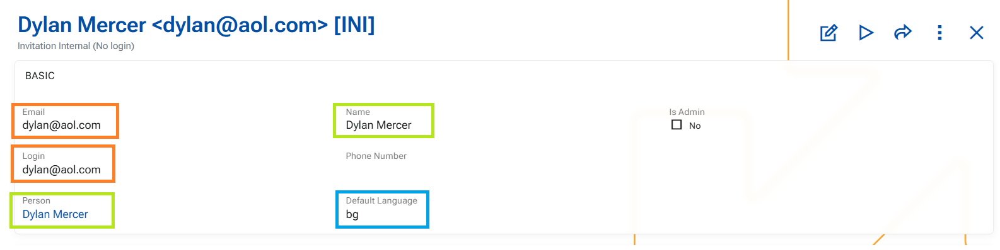

Security
Notable features
Other features
1. System tweaks at User creation Through a series of business rules we have introduced several improvements in user creation and maintenance to streamline data entry and ensure consistent defaults.
These changes aim to:
- reduce manual input
- improve consistency
- provide sensible defaults while preserving user control
➡️ Email → Login auto-fill
When Email is populated, the Login field is automatically filled with the same value.
- This applies only if Login is empty.
- Once a value exists in Login, it is not affected by further changes to Email.
➡️ Person → Name synchronization
When a Person is selected, the Name field is automatically populated.
- If Person is changed → Name is updated accordingly.
- If Person is cleared → Name is also cleared (and validation will require it again on save).
➡️ Default Language initialization (R39700-3) -This rule applies only on insert
On user creation, DefaultLanguage is automatically set:
- First from the system configuration (Default language).
- If not defined → from the current language of the user creating the record.
- If
DefaultLanguageis later cleared, it is not re-populated automatically. In this case, the system uses English as an implicit fallback.
